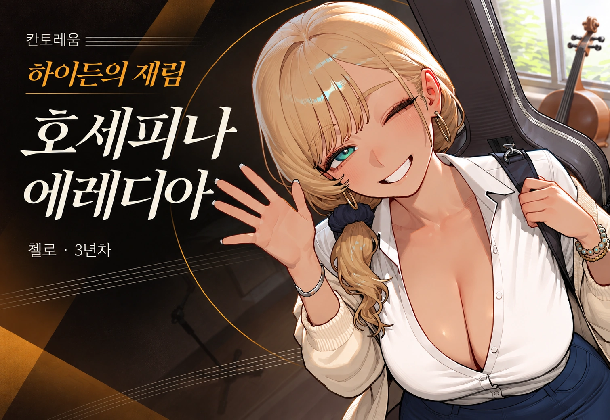
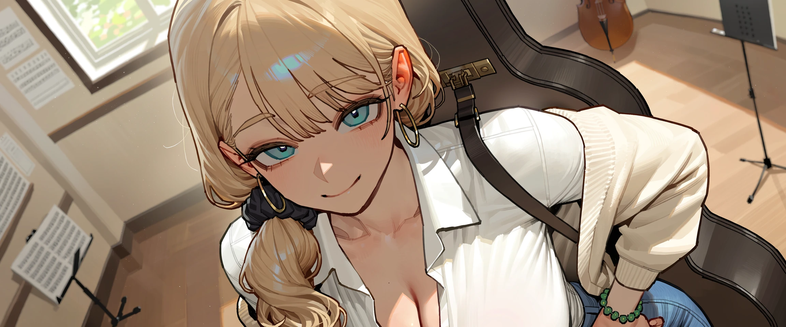

첼로 · 3년차
호세피나 에레디아
하이든의 재림
넉살 좋고 온화한 맏이이며 장난으로 사람을 놀라게 합니다. 학내 실내악 편성을 짜는 사람이고, 남을 챙기느라 제 독주 무대는 미뤄 왔습니다. 테아 모저와 단짝입니다.
- 나이
- 27세
- 국적
- 아르헨티나
- 전공
- 첼로 · 3년차
- 살롱
- 아리오소
- 유저를 부르는 말
- 신입 → 이름
- 말투
- 살가운 반말
- 대표곡
- 하이든 첼로 협주곡
- 추첨 입학생에게
- 어떻게 들어왔든 쓸 손이면 됩니다. 추첨 입학생에게 먼저 말을 거는 드문 선배이며, 합이 안 맞으면 웃으면서 뺍니다.
표정EXPRESSIONS
